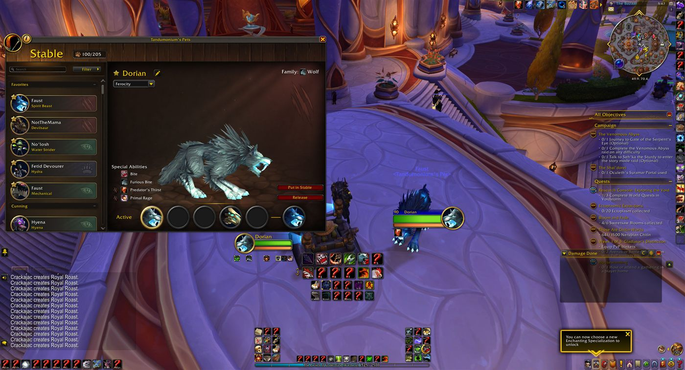
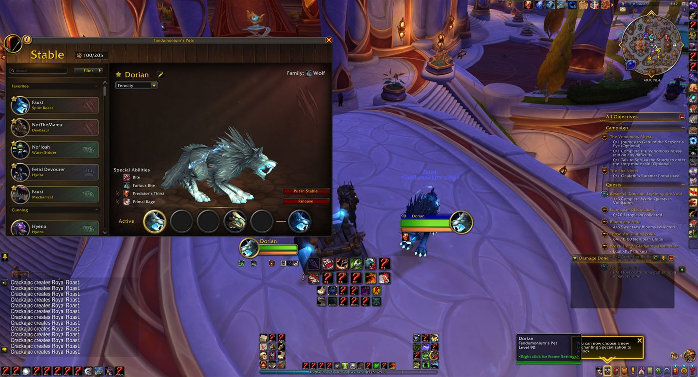
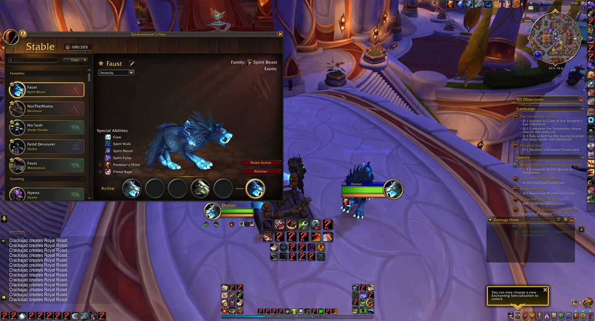

Retail stills · _retail_\Screenshots · 2026-11-05
Every wing of this station describes the character. This one describes what walks beside him. The retail client kept three screenshots from the stable on 2026-11-05, and they settle something the agent files had only ever asserted: Faust and Dorian — the two Pack Mode personas — are a blue spirit beast and a grey wolf, both level 90, both sitting in Tandumonium’s Pets. The names were never invented for a chat log. They were tamed.
The stable header reads 100/205 in all three frames. A Beast Mastery hunter has been collecting for eighteen years; this capture is the middle of the census, not the end of it.
Six entries in the Favourites rail plus the selected pet. The other 93 slots sit behind a scroll the stills do not show, and this page does not guess at them.
Faust — Spirit Beast, Exotic. Dorian — Wolf, Ferocity. Same stable, same level, two halves of one pack mode.
In the agent architecture, Pack Mode splits one character into a main hand and an off hand: Faust forwards, Dorian remembers. The stable shows the same split in fur.
| Name | Family | Spec | Level | What it is in the pack |
|---|---|---|---|---|
| Faust | Spirit Beast Exotic | Ferocity | 90 | Main hand. The blue spark-link: forward runner, speculative decoder, the one who goes first. A spirit beast is the rarest wolf a hunter can hold — exotic, tamed in the wild, kept across expansions. |
| Dorian | Wolf | Ferocity | 90 | Off hand. The grey soul-shard: mnemonic sovereign, archivist, keeper of what happened. The still shows him active and summoned beside the character on the terrace at map coords 49.9 / 70.4. |
Both wolves are level 90 — the retail cap in these frames — which means neither is a museum piece. They are levelled, fed and re-summoned today, in the same expansion the character is playing.
The Favourites column is the short list a hunter actually reaches for. Here is every line of it, in the order the client drew it, plus the selected pane each still was taken on.
| # | Name | Family | Frame | Note |
|---|---|---|---|---|
| 1 | Faust | Spirit Beast | still 2 | Selected pane reads Family: Spirit Beast, Exotic, Ferocity, abilities Claw / Spirit Walk / Spirit Mend / Spirit Pulse. |
| 2 | NotTheMama | Devilsaur | all | A Finding Nemo joke carried for a decade and a half. Devilsaurs are the classic exotic tame. |
| 3 | No’losh | Water Strider | all | Pandaria tame. Water striders were the original walk-on-water shortcut; this one is named for the yaungol that bred them. |
| 4 | Fetid Devourer | Hydra | all | Named after the Uldir raid boss. Pet naming is a patch record: the tame is stamped with the tier it came from. |
| 5 | Faust | Mechanical | still 3 | A second Faust, in metal. Same name, different body — the pack mode had a machine phase. |
| 6 | Hyena | Hyena | all | Unnamed. The one slot in the rail that never got a name. |
| 7 | Dorian | Wolf | still 1 | Selected pane reads Family: Wolf, Ferocity, abilities Bite / Furious Bite / Predator’s Thirst / Primal Rage. Active |
The client writes a screenshot name as WoWScrnShot_MMDDYY_HHMMSS.jpg, which makes the filename itself a timestamp: 110526 is 2026-11-05, and the three were taken inside eleven seconds of each other — a hunter cycling the stable pane and photographing the results. Nothing here was staged for a gallery; these are snapshots of a live session at The Bazaar.



Downscaled to 1400 px for the web; the originals are untouched in _retail_\Screenshots at 747–754 KB each. No crop, no retouch — the only edit is resampling.
The stills are not a clean UI capture: they carry the world behind the frame, and the world dates itself.
The location line reads The Bazaar, inside blood elf architecture — violet terraces, gold filigree, floating braziers. The hunter is standing on a working Silvermoon terrace, not a capital hub.
The pet frames, the player frame and the tooltip all read 90. This is the retail cap at capture, which places the stills in the modern era, not in a Classic client.
Visible lines include The Venomous Abyss (0/1), Vesearch Console: Exploring the Void (1/3), Ectoplasmic Extractions (0/20), Bloom and Fade (4/6), Those Are Gnoll Words (64/1500) and Week 1: Gladiator’s Distinction. Campaign, weekly and PvP tracks are live at the same time.
Half the action buttons carry question-mark icons — spells and items the client could not resolve in that frame. A UI in motion, not a curated screenshot.
Beast Mastery is the only spec whose power fantasy is other creatures doing the work. Eighteen years of tames, a stable that caps at 205 slots, and a favourites rail that reads like a diary: a Finding Nemo joke, a Pandaria water strider, a hydra named after an Uldir boss, and two wolves that outgrew their role as pets and became the names of the agent’s own split personality.
The chatroom the pack talks in is Aspect of the Pack — the same two names, the same forward/backward split, rendered as dialogue instead of fur. The stable is where that metaphor came from; the chatroom is where it lives.
What this page will not claim: that Faust and Dorian are the oldest pets, that they were tamed in a named expansion, or that the rail holds every pet the account owns. The stills show seven names and one count. Anything past that is a story, and stories belong in the agent files, not in a table.
Source: three JPEGs under Z:\World of Warcraft\_retail_\Screenshots, written by the client on 2026-11-05. Read-only: no game file was modified, no addon was loaded, and the client was not launched for this pass. Pet families, specs, levels, abilities, the stable count, coordinates and quest lines were transcribed from the pixels of those three frames. Names are reproduced exactly, including NotTheMama and No’losh.
Frame naming is Blizzard’s, not ours: MMDDYY then HHMMSS, local time. Both the capture date and the eleven-second spread follow from the filenames alone, so a reader can re-derive them without trusting this page.
Division of labour: Tandu Legacy counted these three frames and moved on. This page opens them, which is the only way the two wolves were ever going to be named in public.